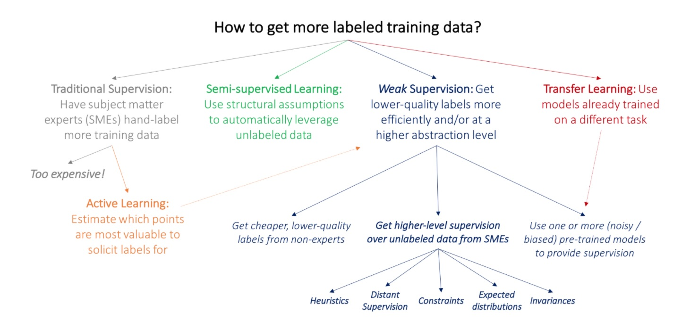
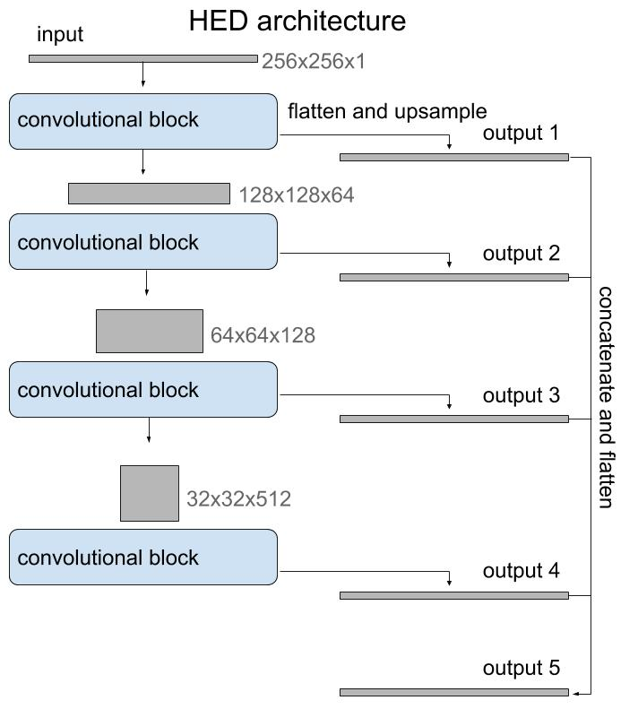
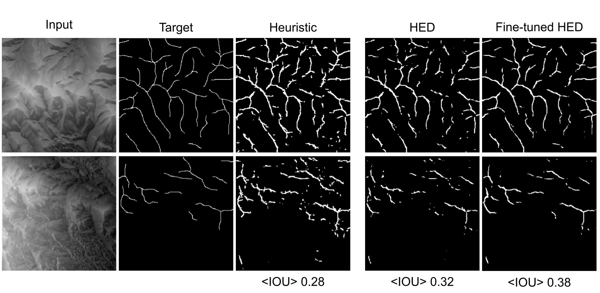
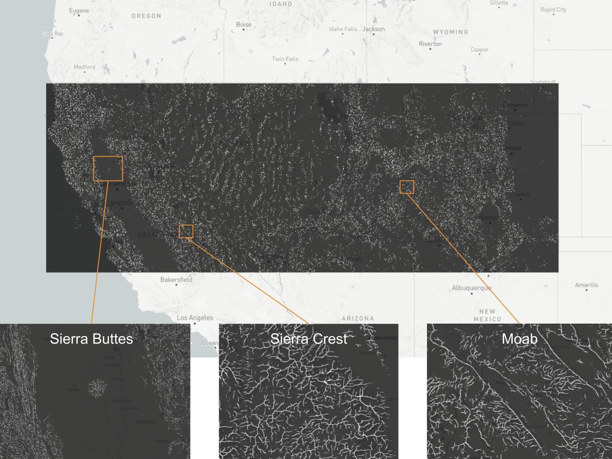

Years ago I tried to use what I knew about image processing to identify ridges in a digital elevation model. I quickly realized that the way I intuitively identify a ridge is not easy to describe algorithmically. I knew it had something to do with the slope and curvature of the landscape, but I never came up with an algorithm that could reproduce the ridge lines I would intuitively identify. The two main problems are that my idea of a "ridge" is context dependent - it has to be more "ridge like" than the surrounding terrain - and I naturally connect ridge lines into simple and continuous features even if there are breaks.
The problem remained in the back of my mind until I learned more about deep learning and I started experimenting with map tiles and terrain tiles. Deep learning seemed like it could be effective on this problem because it might be able model the multi-scale and context dependent clues my own perception uses to identify ridges. I also knew that digital terrain data was available as deep learning friendly map tiles from AWS/Mapzen. So the basic idea was to train a deep learning model to do image segmentation to identify ridges in terrain tiles. I anticipated a few challenges. Ridges are thin, one pixel wide features, which is quite different than the blobs of pixels typically classified by image segmentation models. So I didn't know if standard architectures would work. The big problem though was the absence of training data. This was supposed to be a fun project, so I wasn't about to sit down and manually annotate 1000s of images for a training data set. Maybe I could use my crude, semi-functional image processing algorithm to label the data for me?
Lacking sufficient (or any) training data, I looked for alternative approaches and one that I think has a lot of potential generally is weak supervision. Weak supervision is a category of methods that try to make use of low quality labels by, for example, training a generative model over a group of noisy labeling functions or by pretraining on the low quality labels and fine tuning on a small number of high quality labels. (Which is what I did.)
[Weak Supervision: A New Programming Paradigm for Machine Learning]
In my case, the low quality labeled data could be generated using my hand-crafted, mediocre image processing function for finding ridges, which I creatively named ridges(). After collecting all of the zoom 12 terrain tiles covering Colorado (~4000), I used the hand-crafted function to generate binary masks representing ridge/not-ridge pixels, which would serve as targets for training an image segmentation model.
Then began my unnecessarily complicated quest to find a model that would identify ridge pixels. I tried several different network architectures, including a U-Net, local feature extractor and some bespoke creations, different loss functions and different pre-processing. (The repo bears witness to these abandoned paths.) It would turn out that much of this exploration was unnecessary, but there were three factors that guided my search:
• Large class imbalance. Even in very "ridgey" terrain, only about 10% of the pixels should be classified as ridge.
• Very thin features. Unlike most applications of image segmentation, the features are not blobs of pixels, but long, 1-pixel wide features.
• It can't be that hard. I hand-crafted a function that did okay at identifying ridges, and it even used convolutions, so I knew a deep convolutional network should work. This is why I couldn't give it up, even when my initial experiments didn't learn anything.
After all the experiments, the key to making it work was properly scaling the input :( The mistake which prevented me from catching the bug earlier was using a custom image loader while doing local testing and debugging which correctly interpreted the geotiff pixel values as floating point numbers, while Keras' ImageDataGenerator assumes 8-bit integers. So while testing locally, the input looked fine, but while training on AWS, the model was getting blank images filled with 255!
The architecture I ended up using was the HED, or holistically-nested edge detection, model initialized with weights from the VGG16 model. I decided to try HED because it was developed for edge detection, which is a similar problem in that it's subject to large class imbalance and must extract thin features. The architecture is basically a stack of convolutional blocks similar to the encoder side of a U-Net, but then instead of a decoder branch with transposed convolutions to return to the original size, it uses regular upsampling. It's also a multi-output model and it uses the output of each convolutional block to provide supervision. I didn't try outputting only the last layer, but the multi-output supervision is an interesting sort of regularization that helps in training.

The trained model performed well in terms of accuracy and intersection over union (IOU) against the test set, so I knew that it wasn't overfitting. But there was a problem. The test set was also generated by the heuristic algorithm and the point of this project was to develop a model that was better than the heuristic! So in the end I still needed some hand-labeled examples, but with a very small number of high quality labels, like only 10!, I could fine-tune the network and evaluate the heuristic and the HED model.

Example inputs and the corresponding manually created target masks, heuristic outputs and outputs from the weakly supervised HED model and the model fine-tuned on hand-labeled examples. Below each output is the mean IOU evaluated against the holdout set.
There were many starts and stops to this project (just see the Github history!), so I was happy to finally see that it could work to use a deep learning model to identify ridges. I wouldn't say it works wildly better than the hand-crafted heuristic, but it is better and I learned a lot along the way. This was my first experience using weak supervision, which I think could be a powerful approach in most domains where lots of high quality labeled data is expensive or nonexistent. I also experimented with some new architectures, loss functions and even a custom kernel initializer! As usual, there's much more that could be done, like a loss function that enhances the connectedness of the predicted ridges, but given how long it took to get this far, I don't know if I'll get to it.
One thing that kept me going was imagining being able to run the inference on a large swath of terrain and explore ridges! Here are some examples from across the American west:
